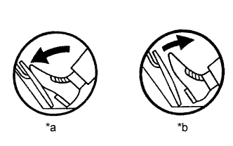
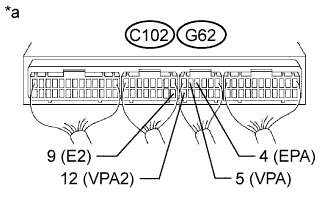

DTC 19 (2) Accelerator Position Sensor Range / Performance Problem |
| DTC No. | DTC Detection Condition | Trouble Area |
| 19 (2) | Either of the ECM sensors has completed learning, and the voltage difference of the No. 1 and No. 2 sensors is more than 1.2 V or less than 0.4 V. |
|
One of the following continues for more than 2.0 seconds.
|
| Trouble Area | Accelerator pedal position expressed as voltage | |||
| Accelerator pedal released | Accelerator pedal depressed | |||
| ACCEL POS #1 | ACCEL POS #2 | ACCEL POS #1 | ACCEL POS #2 | |
| VC circuit open | 0 to 0.2 V | 0 to 0.2 V | 0 to 0.2 V | 0 to 0.2 V |
| VPA circuit open or shorted to ground | 0 to 0.2 V | 1.2 to 2.0 V | 0 to 0.2 V | 3.4 to 5.3 V |
| VPA2 circuit open or shorted to ground | 0.5 to 1.1 V | 0 to 0.2 V | 2.6 to 4.5 V | 0 to 0.2 V |
| E2 circuit open | 4.5 to 5.5 V | 4.5 to 5.5 V | 4.5 to 5.5 V | 4.5 to 5.5 V |
| 1.READ VALUE USING INTELLIGENT TESTER (ACCELERATOR POSITION) |
|  |
Connect the intelligent tester to the DLC3.
Turn the ignition switch to ON.
Enter the following menus: Powertrain / Engine and ECT / Data List / Accel Position.
Check that the value displayed on the intelligent tester changes when repeatedly depressing and releasing the accelerator pedal.
| *a | Depressed |
| *b | Released |
|
| ||||
| OK | ||
| ||
| 2.CHECK HARNESS AND CONNECTOR (ECM - ACCELERATOR PEDAL POSITION SENSOR) |
Disconnect the accelerator pedal position sensor connector.
Disconnect the ECM connector.
Measure the resistance according to the value(s) in the table below.
| Tester Connection | Condition | Specified Condition |
| A19-1 (VCP2) - C102-1 (VC) | Always | Below 1 Ω |
| A19-2 (EPA2) - C102-9 (E2) | Always | Below 1 Ω |
| A19-3 (VPA2) - G62-12 (VPA2) | Always | Below 1 Ω |
| A19-4 (VCPA) - G62-6 (VCPA) | Always | Below 1 Ω |
| A19-5 (EPA) - G62-4 (EPA) | Always | Below 1 Ω |
| A19-6 (VPA) - G62-5 (VPA) | Always | Below 1 Ω |
| Tester Connection | Condition | Specified Condition |
| A19-1 (VCP2) or C102-1 (VC) - Body ground | Always | 10 kΩ or higher |
| A19-2 (EPA2) or C102-9 (E2) - Body ground | Always | 10 kΩ or higher |
| A19-3 (VPA2) or G62-12 (VPA2) - Body ground | Always | 10 kΩ or higher |
| A19-4 (VCPA) or G62-6 (VCPA) - Body ground | Always | 10 kΩ or higher |
| A19-5 (EPA) or G62-4 (EPA) - Body ground | Always | 10 kΩ or higher |
| A19-6 (VPA) or G62-5 (VPA) - Body ground | Always | 10 kΩ or higher |
Reconnect the accelerator pedal position sensor connector.
Reconnect the ECM connector.
|
| ||||
| OK | ||
| ||
| 1.CHECK ECM (VPA, VPA2 VOLTAGE) |
|  |
Turn the ignition switch to ON.
Measure the voltage according to the value(s) in the table below.
| Tester Connection | Switch Condition | Specified Condition |
| G62-5 (VPA) - G62-4 (EPA) | Ignition switch ON | 0.5 to 1.1 V |
| G62-12 (VPA2) - C102-9 (E2) | Ignition switch ON | 1.2 to 2.0 V |
| Tester Connection | Switch Condition | Specified Condition |
| G62-5 (VPA) - G62-4 (EPA) | Ignition switch ON | 2.6 to 4.5 V |
| G62-12 (VPA2) - C102-9 (E2) | Ignition switch ON | 3.4 to 5.3 V |
| *a | Component with harness connected (ECM) |
|
| ||||
| OK | ||
| ||
| 2.CHECK HARNESS AND CONNECTOR (ECM - ACCELERATOR PEDAL POSITION SENSOR) |
Disconnect the accelerator pedal position sensor connector.
Disconnect the ECM connector.
Measure the resistance according to the value(s) in the table below.
| Tester Connection | Condition | Specified Condition |
| A19-1 (VCP2) - C102-1 (VC) | Always | Below 1 Ω |
| A19-2 (EPA2) - C102-9 (E2) | Always | Below 1 Ω |
| A19-3 (VPA2) - G62-12 (VPA2) | Always | Below 1 Ω |
| A19-4 (VCPA) - G62-6 (VCPA) | Always | Below 1 Ω |
| A19-5 (EPA) - G62-4 (EPA) | Always | Below 1 Ω |
| A19-6 (VPA) - G62-5 (VPA) | Always | Below 1 Ω |
| Tester Connection | Condition | Specified Condition |
| A19-1 (VCP2) or C102-1 (VC) - Body ground | Always | 10 kΩ or higher |
| A19-2 (EPA2) or C102-9 (E2) - Body ground | Always | 10 kΩ or higher |
| A19-3 (VPA2) or G62-12 (VPA2) - Body ground | Always | 10 kΩ or higher |
| A19-4 (VCPA) or G62-6 (VCPA) - Body ground | Always | 10 kΩ or higher |
| A19-5 (EPA) or G62-4 (EPA) - Body ground | Always | 10 kΩ or higher |
| A19-6 (VPA) or G62-5 (VPA) - Body ground | Always | 10 kΩ or higher |
Reconnect the accelerator pedal position sensor connector.
Reconnect the ECM connector.
|
| ||||
| OK | ||
| ||